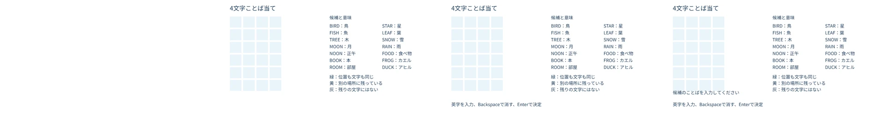
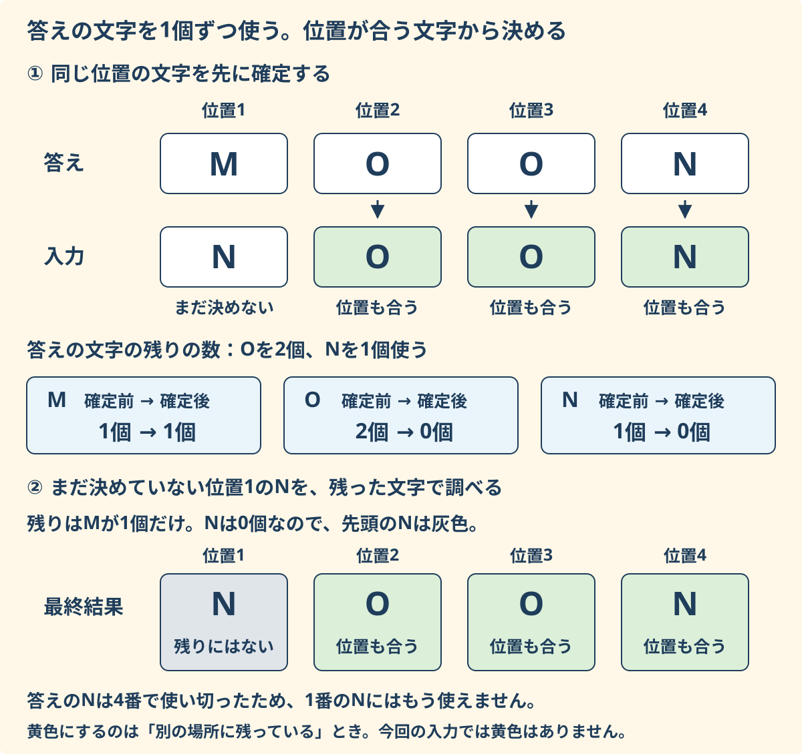

4文字ことば当てを作る
候補と意味を見ながら、4文字の英単語を6回以内に当てます。
始める前に
ZIPを展開してできたフォルダーでindex.htmlを開きます。ZIPにはひな型の3ファイルが入っています。
WindowsでZIPを展開する（動画）
作業用フォルダーのscript.jsを編集します。各ステップで保存し、index.htmlを再読み込みしてください。
ステップ 1：盤面と候補を表示する
このステップの見本を図で見る
x = 30 + col × 48、y = 60 + 0 × 46
4個の四角が1行に並ぶ
y = 60 + 1 × 46 = 106
同じ4列を下へ46pxずらし、6行まで作る
ゲーム画面とコードの前後を見る

このステップの見本
この行を足す前 変わったコードの一例（script.js）
ctx.fillStyle = color === "exact" ? "#23835d" : color === "present" ? "#a06c00" : color === "absent" ? "#576579" : "#eaf5fb";
見本で確かめること
6行4列の四角と14個の候補が表示されます。
目標
6行の盤面と候補の意味を表示します。
確認欄までは準備中です。作業を順に進め、確認欄で保存して動作を確かめます。
書く場所と置き換えるコード
単語一覧を用意する
作業用フォルダーの script.js で、次の目印を探し、その直前に書きます。
目印
function start()書き足すコード
const words4 = [];
配列は複数の値を順に並べます。words4 に4文字の単語と意味を入れます。= は右の値を左に入れ、; は文の区切りです。
最初の単語を入れる
作業用フォルダーの script.js で、次の目印を探し、その直後に書きます。
目印
const words4 = [書き足すコード
{word:"BIRD", meaning:"鳥"}, {word:"FISH", meaning:"魚"}, {word:"TREE", meaning:"木"}, {word:"MOON", meaning:"月"}各要素の word は英単語、meaning は意味です。
候補を追加する
作業用フォルダーの script.js で、次の目印を探し、その直後に書きます。
目印
{word:"MOON", meaning:"月"}書き足すコード
, {word:"NOON", meaning:"正午"}, {word:"BOOK", meaning:"本"}, {word:"ROOM", meaning:"部屋"}, {word:"STAR", meaning:"星"}続けて単語と意味を追加します。カンマは配列の要素を区切ります。
さらに候補を追加する
作業用フォルダーの script.js で、次の目印を探し、その直後に書きます。
目印
{word:"STAR", meaning:"星"}書き足すコード
, {word:"LEAF", meaning:"葉"}, {word:"SNOW", meaning:"雪"}, {word:"RAIN", meaning:"雨"}, {word:"FOOD", meaning:"食べ物"}4文字の候補を順に追加します。
残りの候補を追加する
作業用フォルダーの script.js で、次の目印を探し、その直後に書きます。
目印
{word:"FOOD", meaning:"食べ物"}書き足すコード
, {word:"FROG", meaning:"カエル"}, {word:"DUCK", meaning:"アヒル"}最後の候補まで追加します。
出題と状態を用意する
作業用フォルダーの script.js で、次の目印を探し、その直前に書きます。
目印
function start()書き足すコード
const words = words4;
const wordLength = 4;
const maxRows = 6;
let answer, rows, draft, state, message;
words は出題候補、wordLength は文字数、maxRows は入力できる回数です。answer は答え、rows は回答履歴、draft は入力中の文字です。
答えと入力を初期化する
作業用フォルダーの script.js で、次の範囲を探して置き換えます。
置き換える範囲
function start() {
}
置き換えるコード
function start() {
answer = words[Math.floor(Math.random() * words.length)].word;
rows = []; draft = ""; state = "playing"; message = "";
}
候補からランダムに1つ選び、回答履歴と入力を空にしてプレイを始めます。
候補と色の意味を表示する
作業用フォルダーの script.js で、次の目印を探し、その直後に書きます。
目印
ctx.clearRect(0, 0, canvas.width, canvas.height);
書き足すコード
ctx.fillStyle = "#1f3d5b"; ctx.font = "22px sans-serif";
ctx.fillText(wordLength + "文字ことば当て", 30, 38);
ctx.font = "16px sans-serif";
ctx.fillText("候補と意味", 390, 70);
const rowsPerColumn = Math.ceil(words.length / 2);
words.forEach((item, i) => ctx.fillText(item.word + "：" + item.meaning, 390 + Math.floor(i / rowsPerColumn) * 190, 100 + (i % rowsPerColumn) * 25));
ctx.fillText("緑：位置も文字も同じ", 390, 285);
ctx.fillText("黄：別の場所に残っている", 390, 308);
ctx.fillText("灰：残りの文字にはない", 390, 331);
ctx はひな型の描画の道具、font は文字の大きさと書体です。候補を2列に並べ、緑・黄・灰の意味を表示します。
回答欄の行と列を用意する
作業用フォルダーの script.js で、次の目印を探し、その直後に書きます。
目印
ctx.fillStyle = "#1f3d5b"; ctx.font = "22px sans-serif";
ctx.fillText(wordLength + "文字ことば当て", 30, 38);
ctx.font = "16px sans-serif";
ctx.fillText("候補と意味", 390, 70);
const rowsPerColumn = Math.ceil(words.length / 2);
words.forEach((item, i) => ctx.fillText(item.word + "：" + item.meaning, 390 + Math.floor(i / rowsPerColumn) * 190, 100 + (i % rowsPerColumn) * 25));
ctx.fillText("緑：位置も文字も同じ", 390, 285);
ctx.fillText("黄：別の場所に残っている", 390, 308);
ctx.fillText("灰：残りの文字にはない", 390, 331);
書き足すコード
for (let row = 0; row < maxRows; row++) {
const entry = rows[row];
for (let col = 0; col < wordLength; col++) {
}
}
row は回答の行、col は文字の列です。行と列を順に扱います。
回答欄を描く
作業用フォルダーの script.js で、次の目印を探し、その直後に書きます。
目印
for (let col = 0; col < wordLength; col++) {
書き足すコード
const x = 30 + col * 48, y = 60 + row * 46;
const color = entry ? entry.result[col] : "empty";
ctx.fillStyle = color === "exact" ? "#23835d" : color === "present" ? "#a06c00" : color === "absent" ? "#576579" : "#eaf5fb";
ctx.fillRect(x, y, 42, 40);
ctx.fillStyle = entry ? "white" : "#1f3d5b"; ctx.font = "bold 23px sans-serif";
ctx.fillText(entry ? entry.word[col] : row === rows.length ? (draft[col] || "") : "", x + 12, y + 28);
判定の種類で色を選び、幅42・高さ40の四角を描きます。回答済みならその文字、現在の行なら入力中の文字を表示します。
案内を描く
作業用フォルダーの script.js で、次の範囲を探して置き換えます。
置き換える範囲
}
}
function gameLoop()置き換えるコード
}
ctx.fillStyle = "#1f3d5b"; ctx.font = "16px sans-serif";
ctx.fillText(message, 30, 342);
}
function gameLoop()画面の下に message を表示します。
保存後の確かめ方
保存してゲーム画面を更新する（動画）
index.html を再読み込みします。6行4列の四角と14個の候補が表示されます。 この段階の見本を開く
小さな練習
maxRowsを6から5に変えると、何行になりますか。
練習の答え
5行になります。
ステップ 2：英字を入力する
このステップの見本を図で見る
このステップの見本
この行を足す前 変わったコードの一例（script.js）
if (event.key === "Backspace") { event.preventDefault(); draft = draft.slice(0, -1); message = ""; return; }
見本で確かめること
BIRDと打ってEnterを押すと1行が埋まり、短い入力は受け付けません。
目標
英字の入力、削除、候補の確認を行います。
確認欄までは準備中です。作業を順に進め、確認欄で保存して動作を確かめます。
書く場所と置き換えるコード
キー処理を用意する
作業用フォルダーの script.js で、次の目印を探し、その直前に書きます。
目印
function update()書き足すコード
function handleKey(event) {
}
handleKey() に文字入力と決定の処理を書きます。
特別な入力と終了後を除く
作業用フォルダーの script.js で、次の目印を探し、その直後に書きます。
目印
function handleKey(event) {
書き足すコード
if (event.repeat || event.ctrlKey || event.metaKey || event.altKey) return;
if (state !== "playing") return;
押しっぱなしや組み合わせ入力、プレイ終了後は処理を終えます。
文字の追加と削除を受け付ける
作業用フォルダーの script.js で、次の目印を探し、その直後に書きます。
目印
if (event.repeat || event.ctrlKey || event.metaKey || event.altKey) return;
if (state !== "playing") return;
書き足すコード
if (event.key === "Backspace") { event.preventDefault(); draft = draft.slice(0, -1); message = ""; return; }
if (/^[a-zA-Z]$/.test(event.key) && draft.length < wordLength) { draft += event.key.toUpperCase(); message = ""; return; }
Backspace で最後の1文字を消し、英字なら大文字にして文字数の上限まで加えます。
Enter で候補を確認する
作業用フォルダーの script.js で、次の目印を探し、その直後に書きます。
目印
if (event.key === "Backspace") { event.preventDefault(); draft = draft.slice(0, -1); message = ""; return; }
if (/^[a-zA-Z]$/.test(event.key) && draft.length < wordLength) { draft += event.key.toUpperCase(); message = ""; return; }
書き足すコード
if (event.key !== "Enter") return;
if (draft.length !== wordLength || !words.some(item => item.word === draft)) { message = "候補のことばを入力してください"; return; }
rows.push({word:draft, result:Array(wordLength).fill("absent")});
if (rows.length >= maxRows) { state = "over"; message = "6回入力しました"; }
draft = "";
指定の文字数で候補にある単語だけを受け付けます。この段階ではすべて灰色の結果として保存し、6回で終了します。
操作を案内する
作業用フォルダーの script.js で、次の目印を探し、その直後に書きます。
目印
ctx.fillText(message, 30, 342);
書き足すコード
ctx.fillText("英字を入力、Backspaceで消す、Enterで決定", 30, 385);
文字入力、削除、決定のキーを表示します。
キー処理を登録する
作業用フォルダーの script.js で、次の目印を探し、その直後に書きます。
目印
ctx.fillText("英字を入力、Backspaceで消す、Enterで決定", 30, 385);
}
書き足すコード
window.addEventListener("keydown", handleKey);
keydown が起きたら handleKey() を呼びます。
保存後の確かめ方
BIRDと打ってEnterを押すと1行が埋まり、短い入力は受け付けません。 この段階の見本を開く
小さな練習
BIRのままEnterを押すと、使った回数はいくつ増えますか。
練習の答え
候補の4文字ではないので増えません。
ステップ 3：文字を残数で判定する
このステップの見本を図で見る
一致したO・O・Nを先に消費 → 残りMだけ
先頭Nには残りがないので灰色
全位置で guess[i] === target[i]
4文字とも位置まで同じで緑
ゲーム画面とコードの前後を見る
このステップの見本
この行を足す前 変わったコードの一例（script.js）
if ((remaining[guess[i]] || 0) > 0) { result[i] = "present"; remaining[guess[i]]--; }
見本で確かめること
答えがMOONで入力がNOONなら、先頭は灰色で残りの3文字は緑になります。
目標
位置も文字も合う場所を先に決め、残りを判定します。
確認欄までは準備中です。作業を順に進め、確認欄で保存して動作を確かめます。
書く場所と置き換えるコード
判定する関数を用意する
作業用フォルダーの script.js で、次の目印を探し、その直前に書きます。
目印
function handleKey書き足すコード
function judge(guess, target) {
}
judge() は予想と答えを受け取り、文字ごとの結果を返します。
初期結果と残り文字を用意する
作業用フォルダーの script.js で、次の目印を探し、その直後に書きます。
目印
function judge(guess, target) {
書き足すコード
const result = Array(wordLength).fill("absent");
const remaining = {};
すべて灰色として始め、位置が一致しなかった答えの文字数を remaining に数えます。
位置も一致する文字を先に判定する
作業用フォルダーの script.js で、次の目印を探し、その直後に書きます。
目印
const result = Array(wordLength).fill("absent");
const remaining = {};
書き足すコード
for (let i = 0; i < wordLength; i++) {
if (guess[i] === target[i]) result[i] = "exact";
else remaining[target[i]] = (remaining[target[i]] || 0) + 1;
}
予想と答えが同じ位置で一致すれば緑にし、それ以外の答えの文字を残りとして数えます。

位置が合うOとOとNを先に使います。答えに残るNは0個なので、先頭のNは灰色になります。
残りの文字を判定する
作業用フォルダーの script.js で、次の目印を探し、その直後に書きます。
目印
for (let i = 0; i < wordLength; i++) {
if (guess[i] === target[i]) result[i] = "exact";
else remaining[target[i]] = (remaining[target[i]] || 0) + 1;
}
書き足すコード
for (let i = 0; i < wordLength; i++) {
if (result[i] === "exact") continue;
if ((remaining[guess[i]] || 0) > 0) { result[i] = "present"; remaining[guess[i]]--; }
}
緑以外の文字が残りにあれば黄色にし、残りの数を1減らします。同じ文字を残りの数以上に黄色にしません。
判定結果を返す
作業用フォルダーの script.js で、次の目印を探し、その直後に書きます。
目印
for (let i = 0; i < wordLength; i++) {
if (result[i] === "exact") continue;
if ((remaining[guess[i]] || 0) > 0) { result[i] = "present"; remaining[guess[i]]--; }
}
書き足すコード
return result;
return で各文字の結果を呼び出し元へ返します。
回答を判定して保存する
作業用フォルダーの script.js で、次の範囲を探して置き換えます。
置き換える範囲
rows.push({word:draft, result:Array(wordLength).fill("absent")});
置き換えるコード
const result = judge(draft, answer);
rows.push({word:draft, result});
judge(draft, answer) の結果を回答と一緒に履歴へ入れます。
保存後の確かめ方
答えがMOONで入力がNOONなら、先頭は灰色で残りの3文字は緑になります。 この段階の見本を開く
小さな練習
答えMOONのOは2個です。2文字目と3文字目を確定した後のOの残数はいくつですか。
練習の答え
0個です。
ステップ 4：6回で結果を決める
このステップの見本を図で見る
"NOON" !== "MOON" かつ 5 < 6
まだ次の回答ができる
"NOON" !== "MOON" かつ 6 >= 6
答えMOONを表示して終了
draft === answer を先に判定
最後の1回で正解してもクリア
ゲーム画面とコードの前後を見る
このステップの見本
if (rows.length >= maxRows) { state = "over"; message = "6回入力しました"; }
変わったコードの一例（script.js）if (draft === answer) { state = "clear"; message = "正解！"; }
見本で確かめること
正解すると正解表示が出て、6回外すと答えが表示されます。
目標
正解か6回終了かを判定します。
確認欄までは準備中です。作業を順に進め、確認欄で保存して動作を確かめます。
書く場所と置き換えるコード
正解と回数切れを判定する
作業用フォルダーの script.js で、次の範囲を探して置き換えます。
置き換える範囲
if (rows.length >= maxRows) { state = "over"; message = "6回入力しました"; }
置き換えるコード
if (draft === answer) { state = "clear"; message = "正解！"; }
else if (rows.length >= maxRows) { state = "over"; message = "答えは " + answer; }
入力が答えと一致すればクリアです。そうでなく6回に達したら終了し、答えを表示します。正解を先に調べるので最後の回でも当たればクリアです。
保存後の確かめ方
正解すると正解表示が出て、6回外すと答えが表示されます。 この段階の見本を開く
小さな練習
正解せずに6行を使うとstateは何になりますか。
練習の答え
overになります。
ステップ 5：終了後に再挑戦する
このステップの見本を図で見る
state !== "playing"
回答の行が画面に残る
start() → rows = []; draft = ""
盤面が空に戻り、新しい答えを抽選
ゲーム画面とコードの前後を見る
このステップの見本
この行を足す前 変わったコードの一例（script.js）
if (state !== "playing") ctx.fillText("Spaceで再挑戦", 490, 370);
見本で確かめること
正解後にSpaceを押すと盤面が空になります。
目標
終了後のSpaceで新しい問題を始めます。
確認欄までは準備中です。作業を順に進め、確認欄で保存して動作を確かめます。
書く場所と置き換えるコード
Space で再挑戦する
作業用フォルダーの script.js で、次の目印を探し、その直後に書きます。
目印
if (event.repeat || event.ctrlKey || event.metaKey || event.altKey) return;
書き足すコード
if (state !== "playing" && event.key === " ") { event.preventDefault(); start(); return; }
終了後の Space で start() を呼び、新しい答えと空の履歴に戻します。
再挑戦の案内を描く
作業用フォルダーの script.js で、次の目印を探し、その直後に書きます。
目印
ctx.fillText("英字を入力、Backspaceで消す、Enterで決定", 30, 385);
書き足すコード
if (state !== "playing") ctx.fillText("Spaceで再挑戦", 490, 370);
プレイ終了後に Space の案内を表示します。
保存後の確かめ方
正解後にSpaceを押すと盤面が空になります。 この段階の見本を開く
小さな練習
プレイ中にRを押すと再開しますか。
練習の答え
再開せず、入力欄にRが入ります。